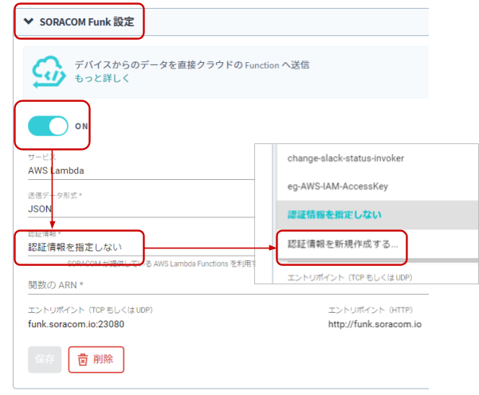
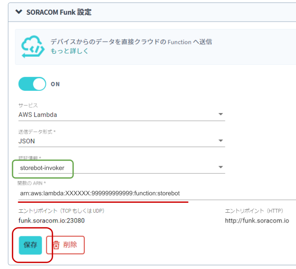

公開日: 2020年8月
レシピ難易度：★★☆☆☆
イベントに出展の困りごとが「スタッフのシフト」。応対を欠かすことが無いように人数や休憩時間に気を配る必要があります。本レシピはIoTを活用してお客様が近づいたら音声で展示物を紹介しつつ、応答した実績をチャット等で共有する「自動店番ロボット」で、そのお悩みを解決します。
全体構成
本レシピを行うのに必要な時間、概算費用
本レシピは以下の通りです。
- 必要な時間: 約1時間
- 概算費用: 約24,500円
※ 概算費用: ハードウェアや SORACOM を始めとした各種サービスの概ねの費用 (税や送料などの付帯費用や無料枠適用は考慮しないものとしています)
このコンテンツの進め方
ページの内容を読み、また作業を行ったら右下の［Next］を押して次のステップへ進みます。また、［Back］を使って戻ったり、左のナビゲーションメニューでもページの移動が可能です。
左上の［×］を押してコンテンツを終了することができます。また、ページを開きなおすことで再開できます。ページのアドレスはブラウザの［履歴］メニューを利用してください。
本レシピを行うためには以下のものをご用意ください。
ハードウェア
品名 | 数量 | 価格 | 購入先 | 備考 |
IoT 体験キット 〜距離測定センサー〜 | 1 | 15,580円 | キットの中には以下のものが含まれています。(それぞれを個別に準備しても構いません)
| |
microSD カードリーダー | 1 | 約1,600円 | ― | microSD にパソコンから書き込めるようにするために必要です。(例: エレコム カードリーダー MR3-C008BK) |
有線 LAN (USB 型のアダプタ等形状問わず) | 1 | 約1,600円 | ― | パソコンと Raspberry Pi の通信に必要です。(例: BUFFALO 有線LANアダプター LUA4-U3-AGTE-NBK) |
スピーカー | 1 | 約5,000円 | ― | 音声を流すために利用します。動画内ではAnker社のSoundcore2を利用しています。 |
オーディオケーブル | 1 | 約700円 | ― | スピーカーと Raspberry Pi の接続に利用します。Raspberry Pi 側は 3.5mm サイズです。(例: Amazon ベーシック オーディオケーブル) |
パソコン | 1 | ― | ― |
|
※ 金額はレシピ作成時となります。ソラコムで販売している金額は税抜き・送料別です。
その他必要なもの
必要なもの | 費用 | 作成方法など |
SORACOM アカウント | 無料※ | |
WiFi環境 | ― | Raspberry Piにソフトウェアをダウンロードする際に利用します。ログインポータル(Webによる認証)が無いWiFiをご用意ください。 ※セットアップが終わった後はSORACOM Airでインターネットにつながるため不要となります。 |
※ アカウント作成・維持の費用の料金です。
すでに AWS アカウントを持っている場合の確認事項
- ルートアカウントを利用する場合：特に確認すべき事項はありません。先に進んでください。
- IAM アカウントを利用する場合：AWS Lambda の関数作成および実行権限の有無を確認してください。また、必要権限の解説およびサポートは致しかねますが、AdministratorAccess ポリシーが割り当てられていれば当レシピは完遂可能です (同ポリシーを割り当てたことによる影響については IAM アカウント管理者にご相談ください)
設置に利用したもの
本レシピで設置時に利用した部材です。必須ではありませんがご参考にお使いください。
品名 | 数量 | 備考 |
スマートフォンホルダー | 1 | 超音波距離センサーの取り付けに利用。 |
両面テープ等の固定用部材 | 1 | 超音波距離センサーをスマートフォンホルダーに固定する際に利用。 |
IoT 体験キット 〜距離測定カメラ〜(以下、IoT 体験キット) に同梱されている SIM は、SORACOM に登録することで通信が出来るようになります。そのため、まず IoT 体験キットに同梱されている SIM を SORACOM へ登録をしましょう。
※ すでに登録済み、もしくは登録済みの別の SIM を利用する場合は次へお進みください。
登録の方法は発注済みの SIM を登録するをご覧ください。約5分で完了します。
登録が完了すると SIM 管理の一覧に表示されますので、確認ください。
Raspberry Pi Imager をダウンロードします。
Raspberry Pi のダウンロードページを開き、OS に合った Raspberry Pi Imager をダウンロードします。

Raspberry Pi Imager をインストールします。
Windows の場合
ダウンロードした imager.exe を実行し、インストーラーの指示に従ってインストールを完了します。
インストール完了時の "Run Raspberry Pi Imager" はチェックを外した状態で［Finish］をクリックします。
macOS の場合
ダウンロードした imager.dmg を実行し、 Raspberry Pi Imager を Applications (アプリケーション) フォルダへコピーします。

Raspberry Pi Imager を利用して microSD カードに書き込む
手順は動画をご覧ください。
注意点: STEP2 における Raspberry Pi Imager の起動の方法
Windows | ［スタートメニュー］> "Raspberry Pi Imager" |
macOS | ［Finder］>［アプリケーション フォルダ］> "Raspberry Pi Imager" |
macOS で初回起動時に「インターネットからダウンロードされたアプリケーションです」のダイアログが表示された場合は［OK］をクリックして進めてください。
書き込みが完了したら microSD カードを取り出してください。
Raspberry Pi の起動時に、Wi-Fi への接続と SSH サービスの待ち受けをするように設定を加えます。
ファイルの作成
以下二つのファイルを作成します。テキストエディタで作成してください。
- wpa_supplicant.conf
- ssh
wpa_supplicant.conf
ctrl_interface=DIR=/var/run/wpa_supplicant GROUP=netdev
country=JP
update_config=1
network={
ssid="YOUR_WIFI_AP_SSID1"
psk="password1"
}
network={
ssid="YOUR_WIFI_AP_SSID2"
psk="password2"
}このファイルは Raspberry Pi 起動時に接続する Wi-Fi のアクセスポイントをあらかじめ書いておくことができます。 YOUR_WIFI_AP_SSID1 や password1 を皆さんのご家庭もしくは職場の環境に合わせて書き換えてください。
network={...のssid=には SSID を、psk=にはパスフレーズを書きます。network={...}は複数書くことができるので、家や職場を指定しておくと便利です。(一つでも問題ありません)
ssh
このファイルは「存在する事」が重要です。ファイルの中身は「空 (=0バイト)」にしてください。
2つのファイルを microSD の "boot" にコピーする
一度取り出した microSD を再度パソコンに取り付けます。boot と表示されたディスクが現れるのを確認してください。
その後、先ほどの 2 ファイルを "boot" にコピーします。

※画面は macOSですが、Windows も同様です。
コピーが完了したら microSD を取り出してください。
Raspberry Pi の電源 ON
microSD を Raspberry Pi に取り付けます
少し残りますが奥までしっかりと刺さっていれば問題ありません。
有線 LAN で Raspberry Pi とパソコンを接続
Raspberry Pi の有線 LAN ポートと、パソコンの有線 LAN ポートをケーブルで接続します。
Raspberry Pi に microUSB (電源ケーブル) を接続
ケーブルを挿すと、電源 ON となります。（電源スイッチのようなものがありません）
しばらく経過(約1~2分)すると macOS もしくは Windows 10 から Raspberry Pi へリモートログイン出来るようになります。
SSH リモートログインの方法
Windows の場合
スタートメニューから「コマンドプロンプト」を起動します。
コマンドプロンプトで以下のように入力して実行します。
ssh pi@raspberrypi.local
Are you sure you want to continue connecting (yes/no)?との問いには yes と入力します。- 初期パスワードは Raspbian のドキュメント に記載されていますので、それを利用してログインしてください。
macOS の場合
［Finder］>［アプリケーション］>［ユーティリティ］>［ターミナル］を起動します。
Terminal.app で以下のように入力して実行します。
ssh pi@raspberrypi.local
Are you sure you want to continue connecting (yes/no)?との問いには yes と入力します。- 初期パスワードは Raspbian のドキュメント に記載されていますので、それを利用してログインしてください。
OS の最新化
以降は Windows、macOS 共通の作業です。
Raspberry Pi へ SSH リモートログインしたあと、Raspberry Pi 側で以下を1行ずつ実行します。
sudo timedatectl set-timezone Asia/Tokyo sudo apt update sudo apt upgrade -y sudo systemctl reboot
最後の1行で再起動となります。
Raspberry Pi の 電源 を OFF
OS の最新化を行った後、再起動で Raspberry Pi の起動が確認出来たら、この後行うセンサーの取り付けのために電源を OFF とします。
電源を OFF にする場合は SSH リモートログインした後、Raspberry Pi 側で以下を実行します。
sudo systemctl poweroff
この後 1分ほど経過して緑色 LED の点滅が止んだら microUSB ケーブルを抜きます。これで OFF にできます。
パーツを準備する
以下のパーツを準備してください。
- ジャンパワイヤ (オス - メス) x 4 ※ 画像上部ケーブル
- 超音波距離センサー (3.3V対応) x 1 ※画像左下のスピーカのような形の緑色の基板
- ブレッドボード x 1 ※画像右下の穴あき板
超音波距離センサーのジャンパプラグを抜き取る
超音波距離センサーの裏面を確認してください。その時、ジャンパプラグ(白、もしくは黒の部品)がついていれば抜き取ってください。
抜き取ったジャンパプラグは本レシピでは使用しませんが、保管しておいてください。(無くした場合でも別途購入は可能です)

配線
超音波距離センサーをブレッドボードに刺します。
端から1列目に挿します。ブレッドボードの向きに気をつけてください。
ジャンパーワイヤをブレッドボードに挿します。
センサーのピンは5つありますが、そのうち右側4つを使用します（一番左のピンは利用しません）ジャンパワイヤはセンサーの一番右から赤、青、黄、黒と挿します。
ジャンパワイヤをRaspberry Piにつなげる
Raspberry Pi の電源は OFF の状態で行ってください。
また、接続するピンを間違えると故障の原因になるので、十分気をつけてください。取り付け順序としては、黒、黄、青、赤と、電源である赤を最後にしていただくと比較的安全です。
動作テストを行う
全ての接続が確認出来たら、Raspberry Pi の電源を ON にしてから、Raspberry Pi 上で以下を一行ずつ実行します。
curl -O https://gist.githubusercontent.com/ma2shita/0569ab4717c49349889c9fbe1af25386/raw/bda9390e8792045d3dd73d5db1f800f6dca8de34/sensor_test.py python2 sensor_test.py
sensor_test.py の実行の様子です。センサの前に手をかざしてみて、距離が変化する事を確認してください。
pi@raspberrypi:~ $ python2 sensor_test.py 距離: 8.2 cm 距離: 8.3 cm 距離: 8.3 cm 距離: 8.2 cm 距離: 8.2 cm 距離: 12.2 cm 距離: 335.4 cm 距離: 337.5 cm 距離: 335.6 cm
プログラムの終了は Ctrl + C です。
【参考】sensor_test.py
#!/usr/bin/env python
# -*- coding: utf-8 -*-
import time
# 距離を読む関数
def read_distance():
# 必要なライブラリのインポート・設定
import RPi.GPIO as GPIO
# 使用するピンの設定
GPIO.setmode(GPIO.BOARD)
TRIG = 11 # ボード上の11番ピン(GPIO17)
ECHO = 13 # ボード上の13番ピン(GPIO27)
# ピンのモードをそれぞれ出力用と入力用に設定
GPIO.setup(TRIG,GPIO.OUT)
GPIO.setup(ECHO,GPIO.IN)
GPIO.output(TRIG, GPIO.LOW)
# TRIG に短いパルスを送る
GPIO.output(TRIG, GPIO.HIGH)
time.sleep(0.00001)
GPIO.output(TRIG, GPIO.LOW)
# ECHO ピンがHIGHになるのを待つ
signaloff = time.time()
while GPIO.input(ECHO) == GPIO.LOW:
signaloff = time.time()
# ECHO ピンがLOWになるのを待つ
signalon = signaloff
while time.time() < signaloff + 0.1:
if GPIO.input(ECHO) == GPIO.LOW:
signalon = time.time()
break
# GPIO を初期化しておく
GPIO.cleanup()
# 時刻の差から、物体までの往復の時間を求め、距離を計算する
timepassed = signalon - signaloff
distance = timepassed * 17000
# 500cm 以上の場合はノイズと判断する
if distance <= 500:
return distance
else:
return None
def main():
while True:
distance = read_distance()
if distance:
print "距離: %.1f cm" % distance
time.sleep(1)
if __name__ == "__main__":
main()スピーカーとオーディオケーブルを準備し、Raspberry Piとスピーカーをつなげます。
接続が確認出来たら、Raspberry Pi 上で以下を実行します。成功すると「フロント・センター」と英語で再生されます。音量にはご注意ください。また、聞こえない場合はスピーカーの音量を調整してください。
aplay -D plughw:CARD=0,DEV=0 /usr/share/sounds/alsa/Front_Center.wav
ここからはUSBドングル型モデム(AK-020)とSORACOM IoT SIMを利用してセルラー通信経由でインターネット接続が行えるようにします。
setup_air.sh の実行
USB ドングル型モデムで SORACOM Air によるインターネット接続の一連の設定を自動化する setup_air.sh を実行します。
以下をRaspberry Piで1行ずつ実行してください。
curl -O https://soracom-files.s3.amazonaws.com/setup_air.sh
sudo bash setup_air.shUSB ドングル型モデム (AK-020) に SIM を取り付け、Raspberry Pi に接続する
以下の図を参考に取り付けてください。

Raspberry Pi の USB ポートはどこでも構いませんが、この後に接続する USB カメラとの位置で競合しないようにしてください。USB ドングル型モデム、USB カメラ共に Raspberry Pi の電源が ON 状態でもいつでも抜き挿し可能です。
接続を確認する
USB ドングル型モデムの LED を見ながら接続状態になったのを見計らって、以下をRaspberry Piで実行します。
ping -c 4 pong.soracom.ioこの時、期待される出力は以下の通りです。
PING pong.soracom.io (100.127.100.127) 56(84) bytes of data.
64 bytes from 100.127.100.127 (100.127.100.127): icmp_seq=1 ttl=64 time=75.6 ms
64 bytes from 100.127.100.127 (100.127.100.127): icmp_seq=2 ttl=64 time=58.8 ms
64 bytes from 100.127.100.127 (100.127.100.127): icmp_seq=3 ttl=64 time=55.4 ms
64 bytes from 100.127.100.127 (100.127.100.127): icmp_seq=4 ttl=64 time=43.4 msこれで Raspberry Pi から SORACOM Air を通じてインターネット接続が可能になりました。
ここからはAWS LambdaでLambda関数を作成します。
AWS マネジメントコンソールを開き、AWS Lambdaの関数作成画面へと進みます。
AWSは数多くのサービスがあるため、トップページで「lambda」と探すと素早く移動できます。
AWS Lambdaの管理画面で［関数の作成］をクリックします。
関数の作成画面では［一から作成］をクリックした後、以下のように入力をして［関数の作成］をクリックします。
関数名 |
| 任意の名前が利用できます。 |
ランタイム | Python3.8 | ― |
しばらくすると関数の管理画面に移動します。まず［アクセス権限］タブをクリックし、その後 "ロール名" の部分 (図中では storebot-role-... となっている部分)をクリックします。するとAWS IAM(Identity and Access Management)の管理画面に移動します。
AWS IAMの管理画面でポリシー名の "AWSLambdaBasic..." から始まるリンクをクリックします。
続いて表示された画面で［ポリシーの編集］をクリックします。
続いての画面では［さらにアクセス許可を追加する］をクリックします。
次の画面では "サービス" 等を以下のように設定したら［ポリシーの確認］をクリックします。
サービス | Polly | 検索窓に |
アクション | SynthesizeSpeedh | 検索窓に |
リソース | 全てのリソース | |
リクエスト条件 | （設定不要） |
確認画面では［変更の保存］をクリックします。
ここまでの作業が終了したら、AWS IAMの画面は閉じて問題ありません。
続いてはAWS Lambdaの管理画面に戻り、［設定］タブをクリックします。
下にスクロールすると "関数コード" が出てきます。この中のプログラムを後述する "storebot (Lambda 関数)" の内容と入れ替えます。
storebot (Lambda 関数)
from boto3 import Session
from boto3 import resource
from contextlib import closing
import base64
def lambda_handler(event, context):
text = "こんにちは、このメッセージは店番ロボット君です。お店の前に立ち止まった人に展示物を解説します。実際はテキストを動的に作ったり、Amazon Sスリーを経由して受け渡すのが良いでしょう。"
polly = Session().client("polly")
response = polly.synthesize_speech(Text=text, OutputFormat="mp3", VoiceId="Mizuki")
with closing(response["AudioStream"]) as stream:
r = {'encode': 'base64', 'format': "mp3", 'data': base64.b64encode(stream.read()).decode('utf-8')}
return r入れ替えたら、AWS Lambda 管理画面上部の［テストイベントの選択］をクリックし、その後［テストイベントの設定］をクリックします。
ダイアログでは以下のように設定した後、［作成］をクリックします。
イベント名 |
| 名前は任意です。 |
※イベントの中身自体は変更しません。
AWS Lambdaの管理画面で［保存］をクリックした後に［テスト］をクリックします。
テスト実行後に "関数コード" で "Status: Succeeded" となっていれば成功です。
"関数コード" の［Deploy］をクリックします。ボタンが白くなったら完了です。
ARNを入手する
ここまでの動作が確認出来たら、最後にLambda 関数の ARN(Amazon Resource Name) を入手します。このARNは後ほど SORACOM Funk で使用するため必ず入手してください。
Lambda 関数管理画面の上部にある ARN をメモしてください。(書類マークでコピーできます)
以上で AWS Lambda の設定は終了です。
SORACOM Funk から先ほど作成した Lambda 関数を呼び出せるように、専用の認証情報をAWSで作成します。
AWS マネジメントコンソールを開き、AWS IAM管理画面へと進みます。
AWSは数多くのサービスがあるため、トップページで「iam」と探すと素早く移動できます。

AWS IAM管理画面で［ユーザー］をクリックした後、［ユーザーを追加］をクリックします。
※すでに "ユーザー" 画面であれば ［ユーザーを追加］のクリックのみとなります。
ユーザーを追加の画面では以下のように設定してから［次のステップ：アクセス権限］をクリックします。
ユーザー名 |
| ユーザー名は任意です。後で見返したときにわかりやすい名前が良いでしょう。 |
プログラムによるアクセス | チェックを付ける | ― |
アクセス許可の設定画面では［既存のポリシーを直接アタッチ］をクリックした後、 "AWSLambdaRole" にチェックを付け、［次のステップ：タグ］をクリックします。
※数が多いためフィルタに lambdarole と入力すると素早く見つけることができるでしょう。
タグの追加画面では特に作業はありません。［次のステップ：確認］をクリックします。
確認画面で今までの内容をチェックします。特にアクセス権限に AWSLambdaRole が設定されていることを確認してください。その後［ユーザーの作成］をクリックします。
ユーザーの作成直後に表示される "アクセスキー ID" と "シークレットアクセスキー" をメモしておいてください。シークレットアクセスキー［表示］をクリックすると現れます。また、これ以降で確認することが出来ないため、確実にメモしておきましょう。(.csv のダウンロードも良い選択です)
以上で AWS IAM の設定は終了です。
これまで設定してきた情報を使い SORACOM Funk を設定して Lambda 関数を呼び出せるようにします。
SORACOM ユーザーコンソールにログインした後［Menu］>［SIM 管理］とクリックして SIM 管理画面を開きます。

USB ドングル型モデムに取り付けた SIM にチェックを付け、［操作］>［所属グループ変更］とクリックします。
「新しい所属グループ」のプルダウンボックスをクリックした後、［新しいグループを作成...］をクリックします。

「グループ作成」のグループ名を入力して［グループ作成］をクリックします。
項目 | 例 | 備考 |
グループ名 |
| 自由に入力可能です。日本語も設定可能です。 |
新しい所属グループが先ほど作成したグループになっていることを確認したら［グループ変更］をクリックします。
自動的に SIM 管理画面に戻ります。
SIM の「グループ」に先ほど作ったグループが設定されていることを確認してください。
以上で、グループの作成と所属の作業は完了です。
SORACOM Funk の設定
先ほど作成したグループをクリックします。
グループの設定画面で "SORACOM Funk" を探し、クリックします。すると SORACOM Funk の設定画面が開きます。
SORACOM Funk の設定では、まず "OFF" となっている部分をクリックします。すると "ON" に切り替わり、設定ができるようになります。
その後 "サービス" と "送信データ形式" は変更せずに、 "認証情報" の［認証情報を指定しない］をクリックします。表示される一覧の中から［認証情報を新規作成する...］をクリックします。

認証情報を登録する画面では以下の通りに設定した後、［登録］をクリックします。
認証情報 ID |
| 任意です。後で見返した時にわかりやすくしておくと良いでしょう。 |
AWS Access Key ID | AWS IAMで設定した時にメモをした「アクセスキー ID」を入力します | ― |
AWS Secret Access Key | AWS IAMで設定した時にメモをした「シークレットアクセスキー」を入力します | ― |
SORACOM Funk 設定画面に戻ってきたら追加で以下の設定を行い、その後［保存］をクリックします。
関数の ARN | AWS Lambda管理画面でメモをした ARN を入力します。 | ― |

SORACOM Funk と AWS Lambda の連携設定をテストする
ここまでの設定を実際に動作させてみてテストします。
以下をRaspberry Piで1行ずつ実行してください。
sudo install mpg123 curl -O https://gist.githubusercontent.com/ma2shita/a7f2a0acf9b1a7f43c360e1371aadaed/raw/b07e0ad0b386177eb22ad9734a0f2c1a12c1bb15/soracom_funk_test.py python2 soracom_funk_test.py
以下は soracom_funk_test.py の実行の様子です。スピーカーから「こんにちは、このメッセージは店番ロボット君です....」と再生されるでしょう。
pi@raspberrypi:~ $ python2 soracom_funk_test.py
200
High Performance MPEG 1.0/2.0/2.5 Audio Player for Layers 1, 2 and 3
version 1.25.10; written and copyright by Michael Hipp and others
free software (LGPL) without any warranty but with best wishes
Playing MPEG stream 1 of 1: - ...
MPEG 2.0 L III cbr48 22050 mono
[0:15] Decoding of - finished.
【参考】soracom_funk_test.py
#!/usr/bin/env python
# -*- coding: utf-8 -*-
import urllib2
import json
import base64
from subprocess import Popen, PIPE
def main():
headers = {'Content-Type': 'application/json'}
payload = json.dumps({})
response = urllib2.urlopen(urllib2.Request('http://uni.soracom.io', payload, headers))
print(response.getcode())
body = json.loads(response.read())
mp3data = base64.b64decode(body['data'])
cp = Popen(['mpg123', '-'], stdin=PIPE)
cp.communicate(input=mp3data)
if __name__ == "__main__":
main()これで全ての設定が完了しました。
超音波距離センサーと組み合わせてしゃべることができるか確認します。
以下をRaspberry Piで1行ずつ実行してください。
curl -O https://gist.githubusercontent.com/ma2shita/e7f5d72c7592e8eb09adf92dcdf4310c/raw/2cd2a5eeb7af3ac144671c8bf5e967438c683e3e/storebot.py python2 storebot.py
以下は storebot.py の実行の様子です。超音波距離センサーに手をかざしてみて、5秒経過すると音声が再生されます。
pi@raspberrypi:~ $ python2 storebot.py
距離: 336.2 cm
0
距離: 336.6 cm
0
距離: 334.9 cm
0
距離: 19.6 cm
0
距離: 20.6 cm
1
距離: 20.5 cm
2
距離: 20.6 cm
3
距離: 20.5 cm
4
距離: 20.6 cm
200
High Performance MPEG 1.0/2.0/2.5 Audio Player for Layers 1, 2 and 3
version 1.25.10; written and copyright by Michael Hipp and others
free software (LGPL) without any warranty but with best wishes
Playing MPEG stream 1 of 1: - ...
MPEG 2.0 L III cbr48 22050 mono
[0:15] Decoding of - finished.
0
距離: 335.4 cm
0
距離: 335.9 cm
0
距離: 335.7 cm
【参考】storebot.py
#!/usr/bin/env python
# -*- coding: utf-8 -*-
MIN_DISTANCE_CM = 20
MAX_DISTANCE_CM = 100
STAY_COUNT = 5
import time
# 距離を読む関数
def read_distance():
# 必要なライブラリのインポート・設定
import RPi.GPIO as GPIO
# 使用するピンの設定
GPIO.setmode(GPIO.BOARD)
TRIG = 11 # ボード上の11番ピン(GPIO17)
ECHO = 13 # ボード上の13番ピン(GPIO27)
# ピンのモードをそれぞれ出力用と入力用に設定
GPIO.setup(TRIG,GPIO.OUT)
GPIO.setup(ECHO,GPIO.IN)
GPIO.output(TRIG, GPIO.LOW)
# TRIG に短いパルスを送る
GPIO.output(TRIG, GPIO.HIGH)
time.sleep(0.00001)
GPIO.output(TRIG, GPIO.LOW)
# ECHO ピンがHIGHになるのを待つ
signaloff = time.time()
while GPIO.input(ECHO) == GPIO.LOW:
signaloff = time.time()
# ECHO ピンがLOWになるのを待つ
signalon = signaloff
while time.time() < signaloff + 0.1:
if GPIO.input(ECHO) == GPIO.LOW:
signalon = time.time()
break
# GPIO を初期化しておく
GPIO.cleanup()
# 時刻の差から、物体までの往復の時間を求め、距離を計算する
timepassed = signalon - signaloff
distance = timepassed * 17000
# 500cm 以上の場合はノイズと判断する
if distance <= 500:
return distance
else:
return None
import urllib2
import json
import base64
from subprocess import Popen, PIPE
def main():
cnt = 0
while True:
distance = read_distance()
if distance:
print "距離: %.1f cm" % distance
if MIN_DISTANCE_CM <= distance and distance <= MAX_DISTANCE_CM:
cnt += 1
else:
cnt = 0
if cnt > STAY_COUNT - 1:
cnt = 0
headers = {'Content-Type': 'application/json'}
payload = json.dumps({})
response = urllib2.urlopen(urllib2.Request('http://uni.soracom.io', payload, headers))
print(response.getcode())
body = json.loads(response.read())
mp3data = base64.b64decode(body['data'])
cp = Popen(['mpg123', '-'], stdin=PIPE)
cp.communicate(input=mp3data)
print(cnt)
time.sleep(1)
if __name__ == "__main__":
main()これで全て動作は完了です。
設置をする加工
例えばですが、スマートフォンスタンドを利用して超音波距離センサーを立てかけるようにできると、立ち止まった人の検知がより確実にできるでしょう。
※この例ではブレッドボードを利用せず、直接Raspberry Piとセンサーを接続しています。
現在の状態では、Raspberry Piに電源がONになった後、storebot.py を手で起動する必要があります。実際の運用に向けて「電源がONになったら自動的に storebot.py が動き出す」ようにしてみます。
以下をRaspberry Piで1行ずつ実行してください。
curl -O https://gist.githubusercontent.com/ma2shita/4dfe0f4da1ecec963190be6e8e474990/raw/a9d640ae1797eb642bc96e23cc47340a0c983f97/storebot.service sudo loginctl enable-linger $USER systemctl --user enable $PWD/storebot.service systemctl --user start storebot.service journalctl -n 10
最後の journalctl で期待される出力は以下の通りです。
Aug 31 04:56:50 raspberrypi systemd[575]: Started Storebot.py auto start.
Aug 31 04:56:50 raspberrypi python2[5269]: 0
Aug 31 04:56:51 raspberrypi python2[5269]: 距離: 338.2 cm
Aug 31 04:56:51 raspberrypi python2[5269]: 0
Aug 31 04:56:52 raspberrypi python2[5269]: 距離: 337.0 cm
Aug 31 04:56:52 raspberrypi python2[5269]: 0
Aug 31 04:56:54 raspberrypi python2[5269]: 距離: 337.8 cm
Aug 31 04:56:54 raspberrypi python2[5269]: 0これで次回以降、電源ON時に自動的にstorebot.pyが動くようになりました。
本レシピでは費用がかかるサービスを利用しています。
本項をよく読み、必要な操作や解除作業を行うようにして、想定外の費用が掛からないようにしてください。
費用について
ここで記載している金額は全て税別、送料別となります。
SORACOM プラットフォームの利用料金
サービス／機能 | 料金 |
(今回の利用であれば 100MB 以内で収まる範囲) | |
|
※ 費用詳細はリンク先をご確認ください。
グループ解除
SORACOM Funk はリクエスト回数に応じて費用が発生する従量課金サービスです。そのため、通信が発生しなければ費用も発生しませんが、「機能を OFF にする」することで確実に費用の発生を抑えることができます。またもう1つの方法として「グループからSIMのの所属を解除する」事でも同様の効果が得られます。
グループ解除や削除の方法はグループからの解除 (JP)をご覧ください。